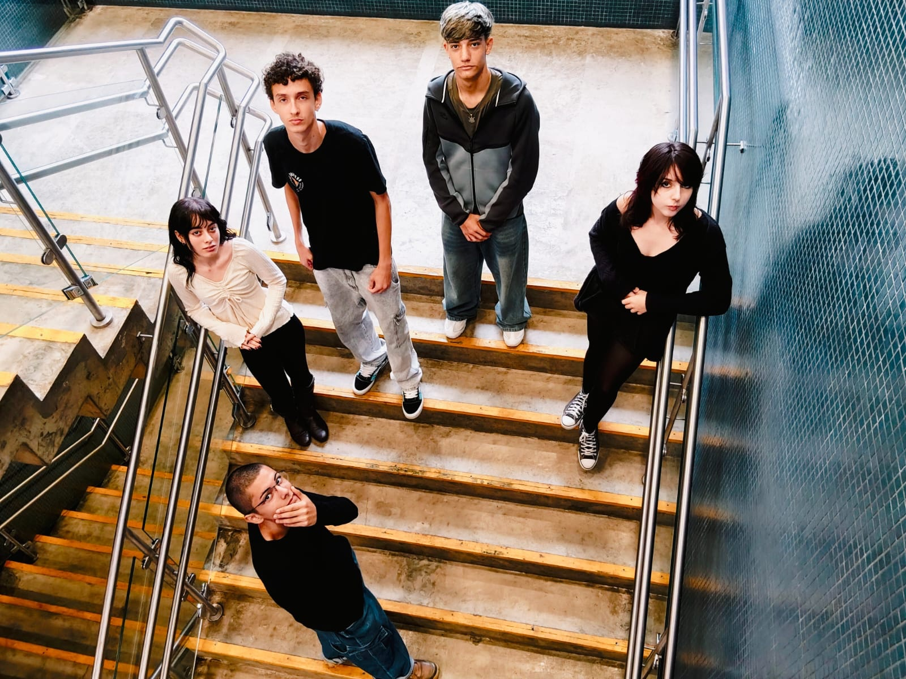

SOBRE NÓS
A roupa como
expressão e identidade.
Made For Expression nasce da ideia de que vestir também é uma forma de dizer quem somos.
MADE FOR EXPRESSION
Quem somos?
Somos a MFE, um coletivo que quer tornar você mais consciente e confortável com seu estilo.
Temos interesse pelo universo do streetwear e queremos apresentar novas roupas, combinações e ideias, mostrando que existem várias formas de se vestir e que você pode encontrar aquela que mais combina com você.
Acreditamos que a moda vai além das roupas, ela também é uma forma de mostrar nossa personalidade e criatividade. Queremos trazer novas ideias, conhecer diferentes estilos e mostrar que cada pessoa pode se expressar do seu jeito, sem precisar seguir padrões.
Nossa intenção é mostrar que não precisamos nos vestir igual a todo mundo para estar na moda. Queremos incentivar você a experimentar, misturar peças e descobrir novas possibilidades, construindo um estilo que realmente tenha a sua cara.
Integrantes: Gabriel, Giuliana, Nathalia, Pedro e Rafael.


NOSSA IDEIA
Feita para vestir o que você sente.
Cada escolha, cor e detalhe pode contar um pouco de quem você é. A MFE quer criar espaço para a expressão individual, com roupas que acompanham seu jeito de existir.
Estamos no começo dessa jornada. A primeira coleção está tomando forma — e esta página é o primeiro passo para apresentá-la.
Conheça as peças ↗